Start
Open a sprite, run Bonebase from File > Scripts, and the window shows up with the Rig tab open.
Templates
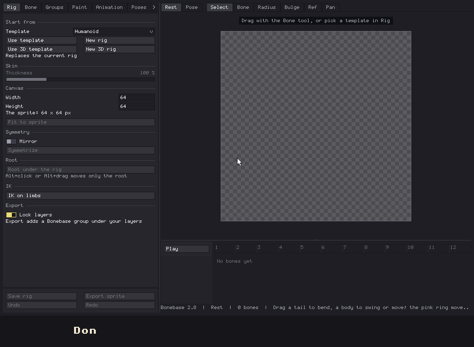
Twenty ready rigs so you don't have to place a hip bone from zero: front and side humanoids, chibis, a quadruped, a winged one and a serpent. Pick one in Template and press Use template.
The humanoids share bone names, so IK, Mirror and Import 3D behave the same on all of them.
Build a rig
All of this happens in Rest mode, the pose your rig stands in before any animation.
Bones and Mirror
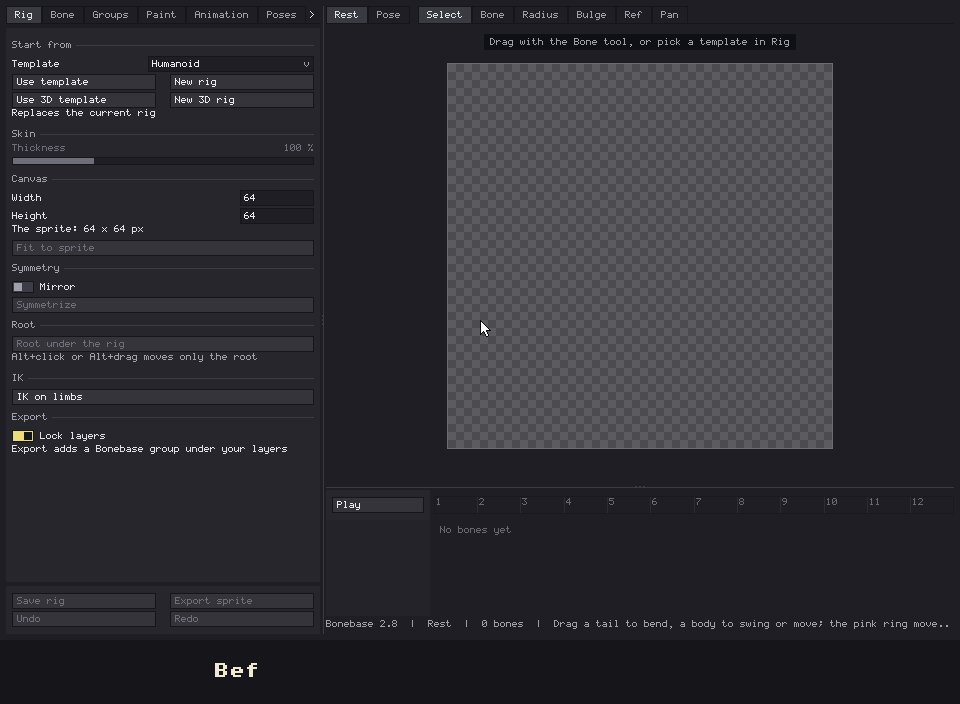
The Bone tool draws a bone with one drag, from empty space, a joint or another bone. With Mirror on, everything you draw on one side shows up on the other.
- With Select, drag a tail to bend a bone, its body to swing or move it, and the pink ring to move the whole rig.
- Symmetrize pairs up a rig you drew by hand.
Radius
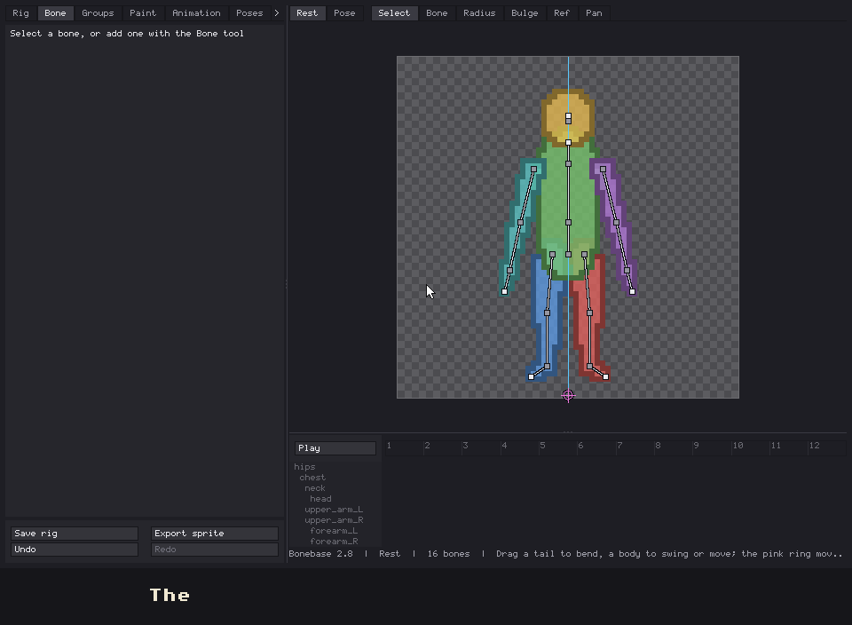
The skin wraps the bones like a soft envelope. The Radius tool sets how thick it is at each joint: drag out from a joint to grow it, in to shrink it.
Bulge
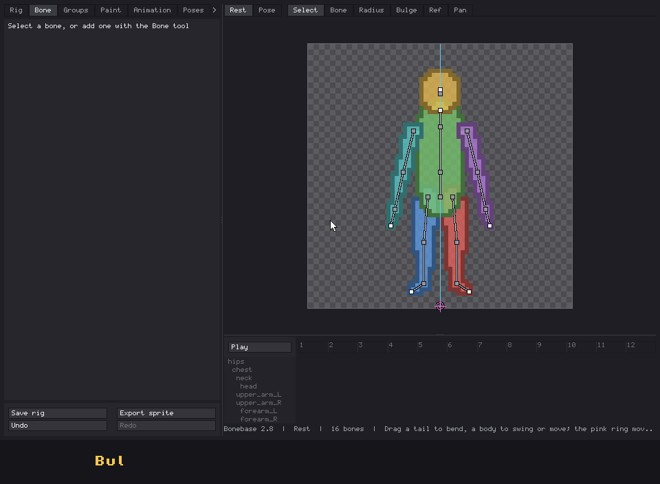
Bulge pushes the skin out anywhere along a bone, on either side. Thighs, calves, a belly, a big chin. Each bulge keeps a handle you can drag again (Delete removes it), and Mirror copies it to the twin bone.
Thickness
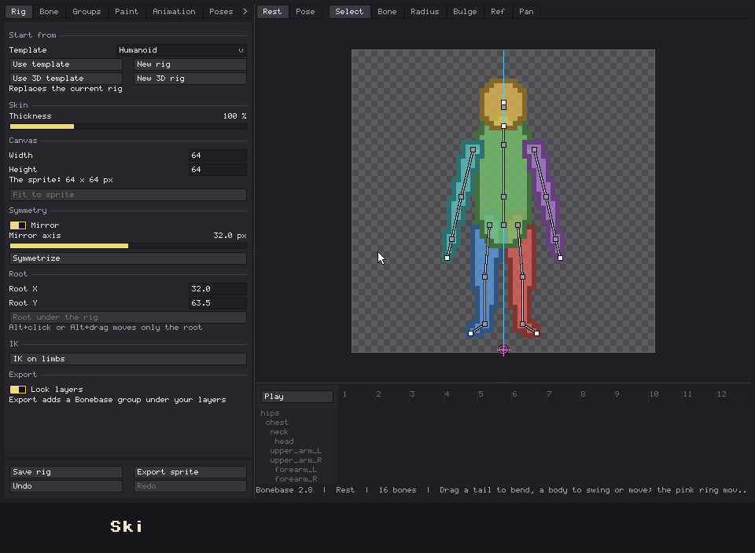
One slider in the Rig tab for the whole skin. The bones don't move, so your animation doesn't change. Handy when the rig is right but the character reads too skinny at small sizes.
Groups
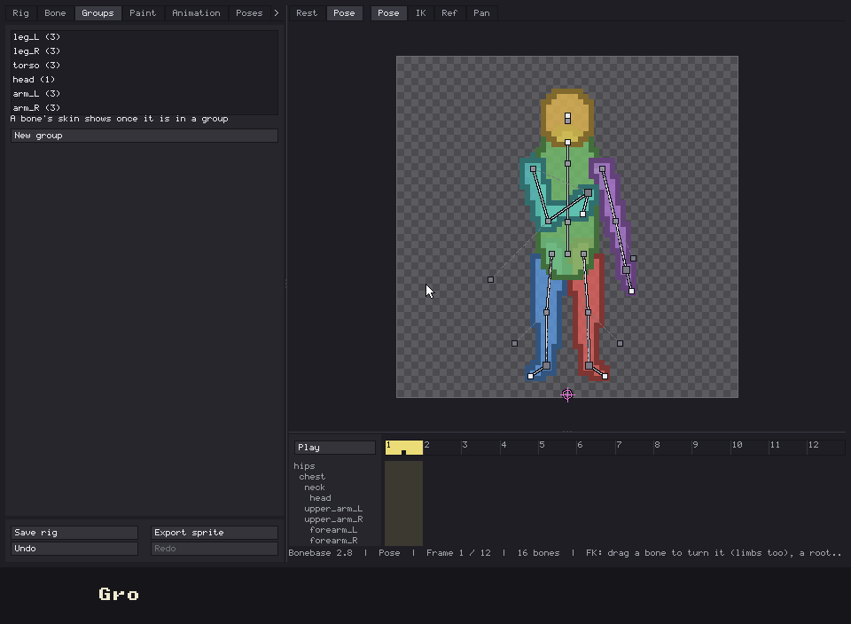
Groups are the layers of the skin: which bones draw together, in which colour, and in what order. Each group becomes its own layer when you export.
- Order in Rest is the default stacking. In Pose it's keyed per frame, so an arm can swing behind the body and come back.
- Blend smooths the seam where bones of the same group meet.
- A bone in no group draws nothing, which is useful for helpers.
Pose
Switch to Pose mode and every change becomes a key on the current frame.
Pose (FK)
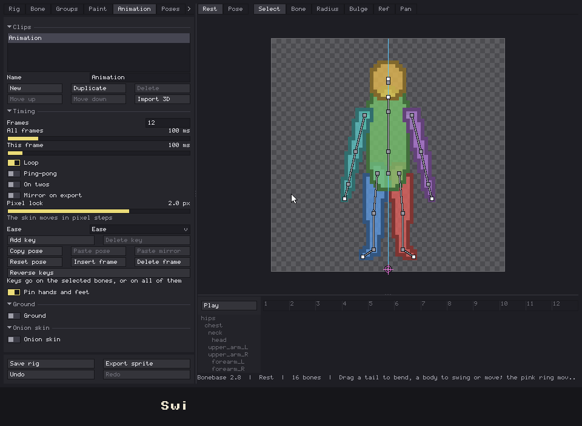
The Pose tool turns a bone when you drag it, and everything below it follows. Drag the root, or a loose bone, to move it instead.
Live IK
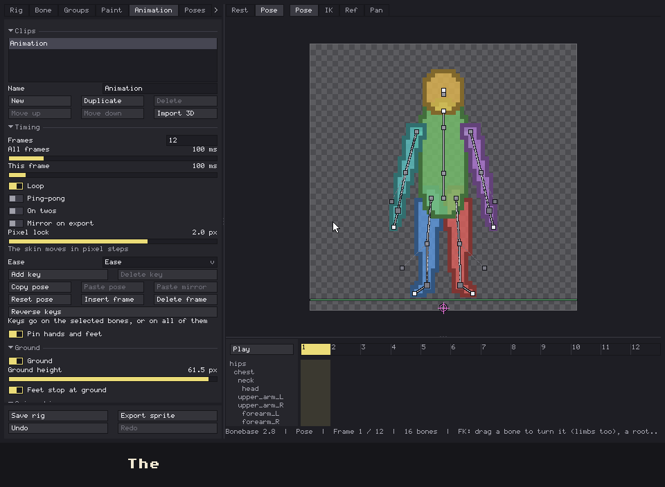
With the IK tool you grab a hand or a foot and pull; the arm or leg works out its own bend. The small dummies at elbows and knees decide which way they bend.
- Move the hips and the hands and feet stay where you left them.
- Turn on the Ground line and feet won't sink below it.
- IK on limbs in the Rig tab sets it up on a rig you drew yourself.
Animate
The timeline sits under the viewport: one row per bone, IK handle and group.
Keys
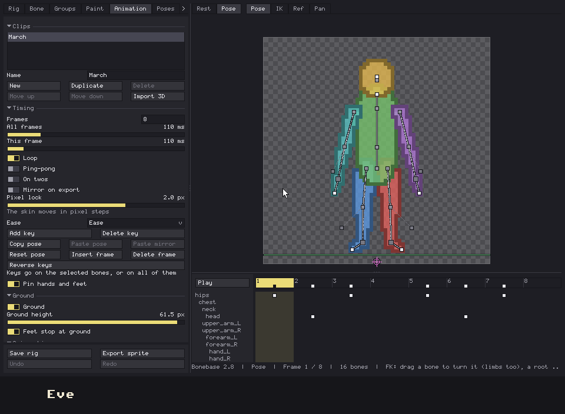
- Click a key, Shift+click to add more, or drag a box.
- Drag them to move them in time. Alt+drag stretches or squeezes their timing.
- Ctrl+Z undoes anything, keys included.
Clips and timing
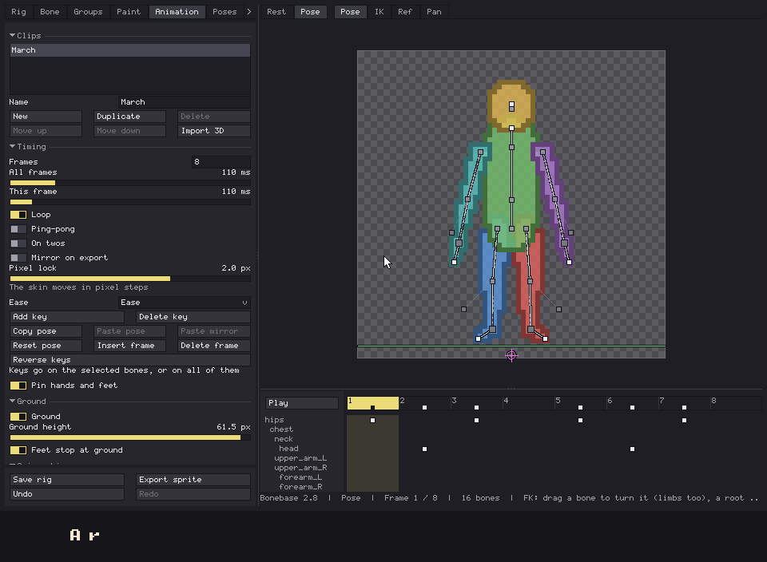
A rig holds as many clips as you need (idle, walk, attack...), and each one exports with its own tag.
- All frames sets the speed of the whole clip, This frame holds just one longer.
- Ping-pong plays there and back. Ease changes how keys blend.
On twos
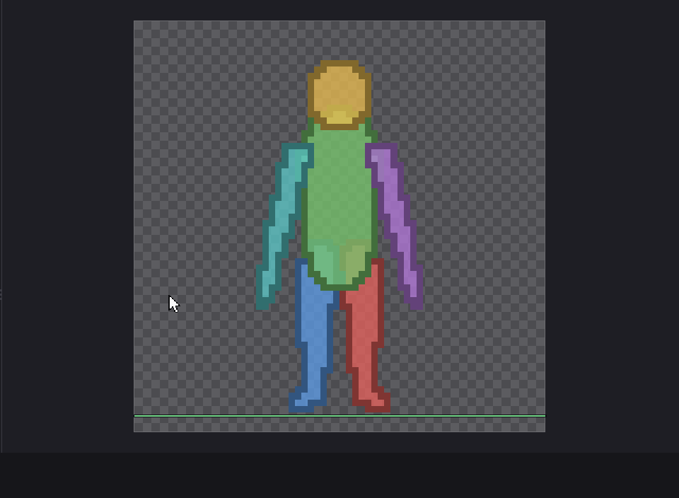
On twos holds every pose for two frames, the way a lot of hand-drawn animation is timed. It looks snappier and it's half the frames to clean up.
Pixel lock
When a bone turns a tiny bit, the outline gets redrawn a little differently every frame and the edges shimmer. Pixel lock makes each bone wait until it has really moved before the skin follows, so it steps the way you'd draw it. 2 is a good start, 0 turns it off.
Onion skin
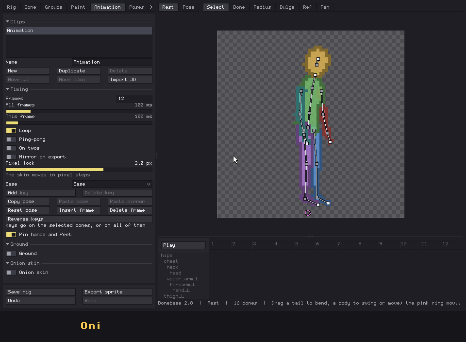
Shows the frames before and after the current one while you pose. Pick how many, their colours, and the style: tint, skin, bones or outline.
Poses
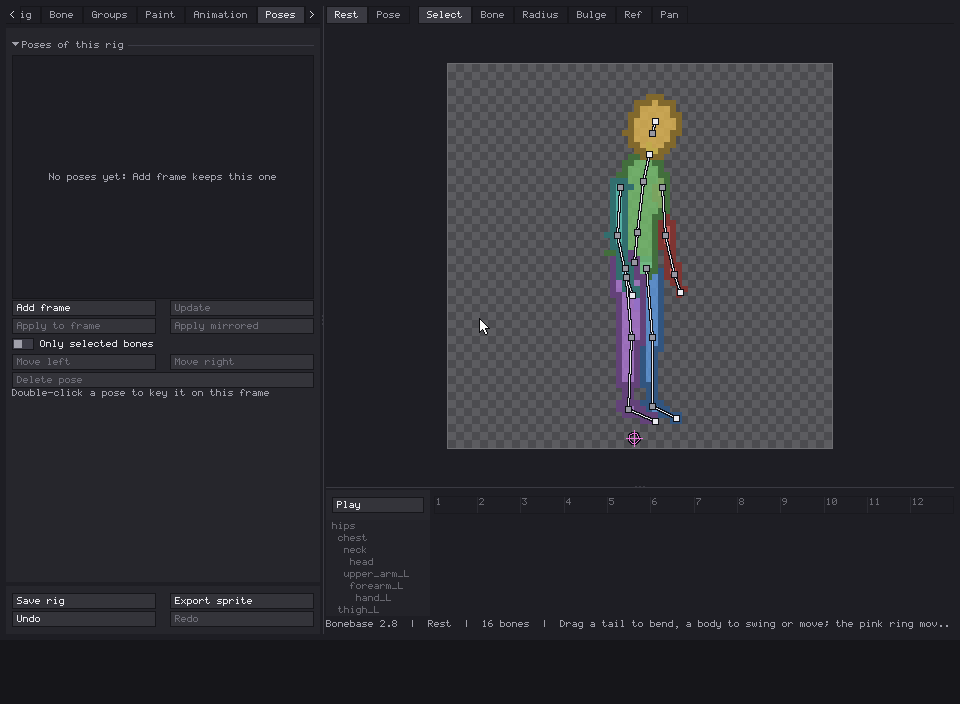
Keep a pose you like and drop it on any frame later. Apply mirrored puts it on the other side, which makes the second half of a walk cycle almost free.
Rig library
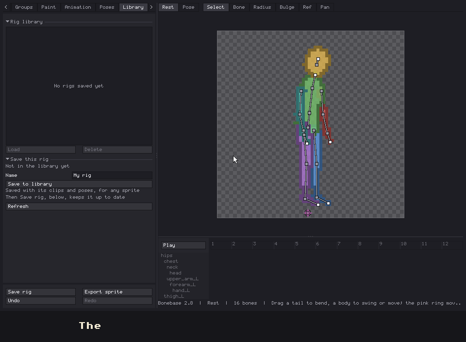
Your rigs, with their clips and poses, kept between sprites. Load one with a click, and Save rig keeps it up to date while you work.
Paint
Instead of a flat coloured skin, paint the character once and let every frame wear it.
Paint sheet

New view lays every group of your rig flat on a sheet, and Open sheet opens it as a normal sprite in Aseprite. Paint on it with your own tools and palette; the rig picks it up as you go, even while the clip plays.
- The big window steps aside for a small one with the preview and the play buttons, so you have room to draw.
- Margin leaves room to paint past the skin: hair, a cap's visor, a sword.
- Outline and Shading can stay on top of your paint or go away.
Views
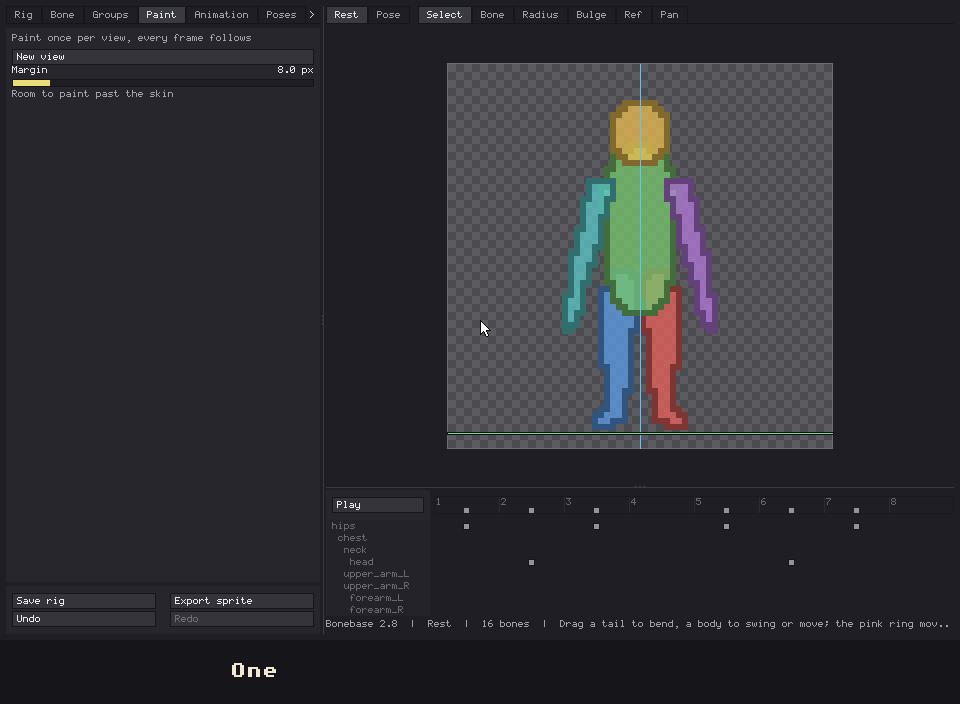
One sheet per view: a front, a back, an angry face, whatever you need. Name them yourself, and each clip picks the one it wears, or the plain skin.
3D
Bring motion in from 3D files, or build the rig in 3D and pick the camera at the end.
Import 3D
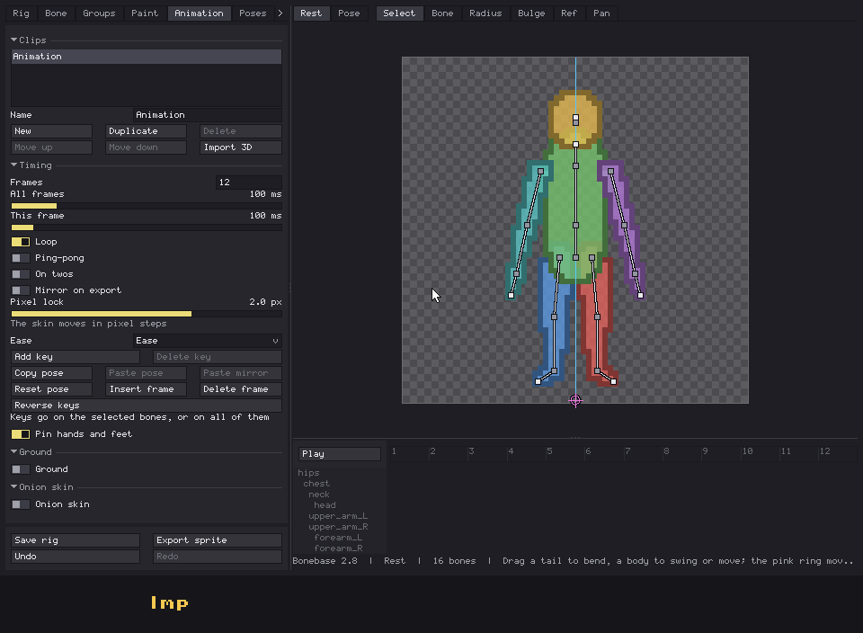
Import 3D in the Animation tab takes GLB, glTF and BVH files. You see the file's skeleton next to your rig, turn the camera to the angle you want to draw, and import it as a clip. Bones are mapped by name; you can fix any of them by hand.
- Mixamo gives you FBX: open it in Blender and export it as .glb.
- Import can keep only the frames you mark and spread them over the length you pick.
Directions

Need the same move from every side? Directions imports it in 2, 4 or 8 directions at once, one clip each. The mirrored ones are flipped on export, so a side view only has to be painted once.
3D rigs

Use 3D template or New 3D rig gives you a skeleton with depth. Animate it once, then Turn and Tilt the camera, and pick the directions to export.
Workspace
Reference images
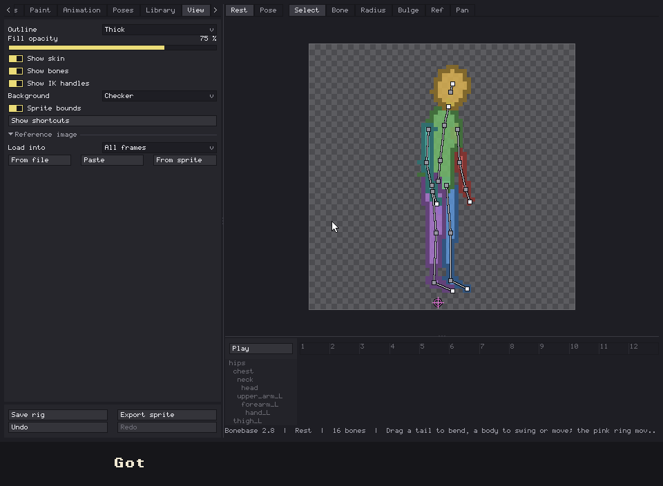
Load a drawing, a photo or another sprite under the rig and build or pose on top of it. Position, scale, rotation and opacity can be keyed per frame. It's saved with the sprite and never exported, so your messy sketches stay between us.
View options
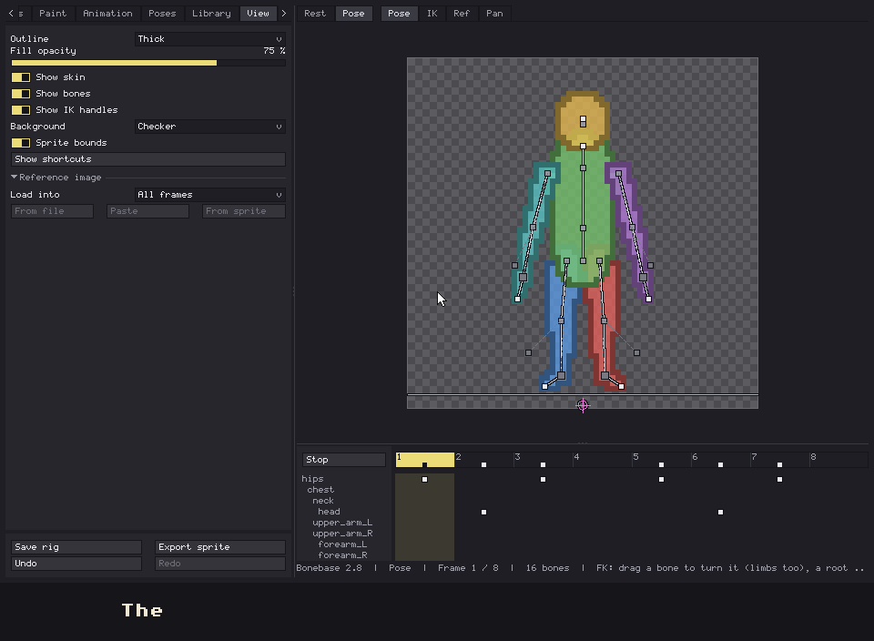
The View tab decides what you see while you work: the skin, the bones, the IK handles, the outline style, the fill opacity and what's behind the rig (checker, a colour, your sprite or one of its layers).
Finish
Export
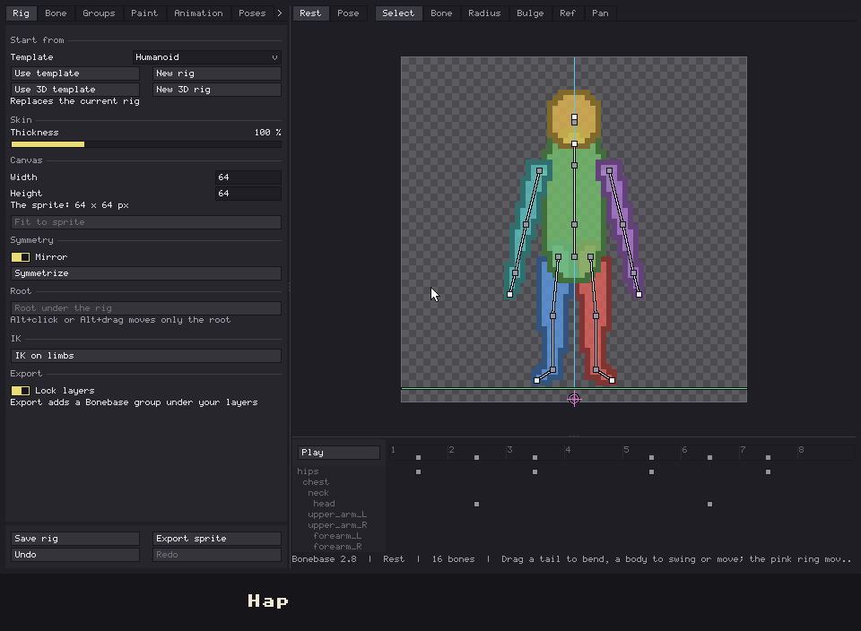
Export sprite writes the animation into your sprite: one layer per group, one frame per frame, one tag per clip, inside a Bonebase group under your own layers. From there they're plain Aseprite frames. Draw over them, clean them up, export your sheet as usual.
Lock layers keeps the exported layers from being edited by accident.